01 北京皇家粮仓 需清理参考源图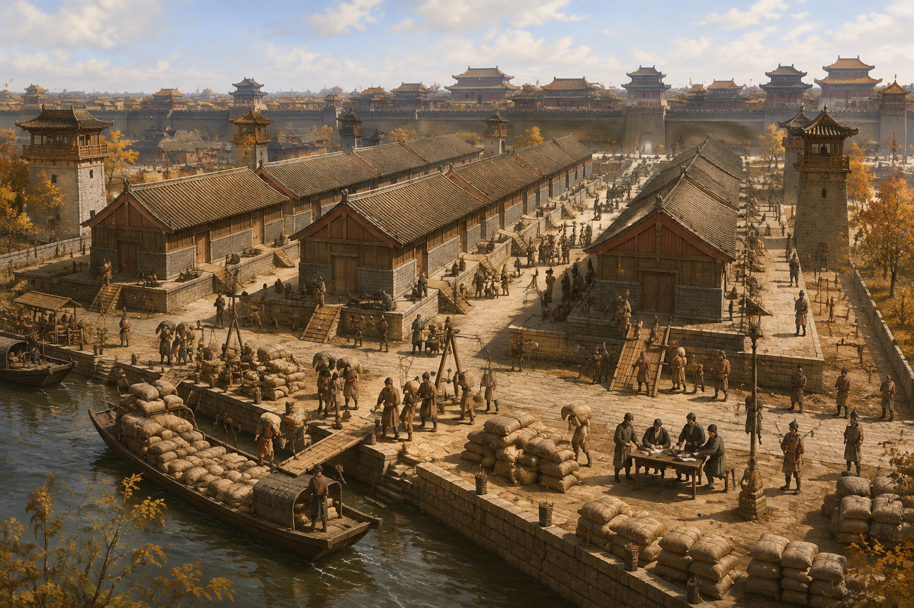原有纯 AI本轮图生图：等待生成传统仓房屋顶、墙体和门面清楚，适合作为建筑形态约束。；背景玻璃高楼及现代楼房占比高，前景有展牌、警示桩和现代设施。；单栋现状仓房无法单独证明皇家粮仓整体规模。建议：保留仓房轮廓，专门清理现代前景并调整背景；对工程名称和地点另行核验。纯 AI · 27:11 居中裁剪示意图生图 · 27:11 居中裁剪示意：等待生成等待 AI 生成
02 博洛尼亚大学 需换源参考源图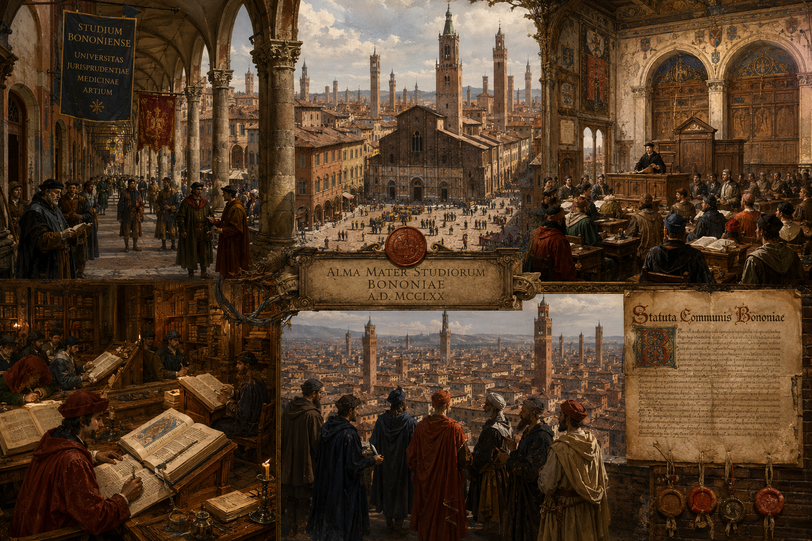原有纯 AI本轮图生图：等待生成主体外观疑似 Piazza Maggiore 的 Palazzo d’Accursio 市政厅，尚未核验。；广场游客及局部现代设施明显；文件名不足以确认大学主体。建议：先核实拍摄地点；若确为市政厅，应改用明确的大学历史院落、讲堂或相关历史画作。纯 AI · 27:11 居中裁剪示意图生图 · 27:11 居中裁剪示意：等待生成等待 AI 生成
03 埃奇米阿津主教座堂 需清理参考源图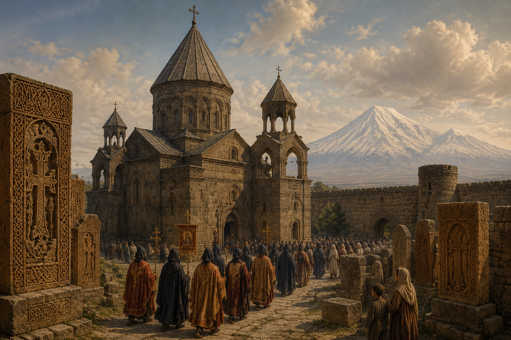原有纯 AI本轮图生图：等待生成中央圆锥顶、侧塔和石砌结构可识别，建筑特征约束较好。；门前有现代游客，园林及道路为现状环境。；现状立面不能证明目标年份的修缮状态。建议：保持塔顶和建筑体量关系，清理游客与现代设施，并核对所选游戏年代。纯 AI · 27:11 居中裁剪示意图生图 · 27:11 居中裁剪示意：等待生成等待 AI 生成
04 埃斯科里亚尔修道院 适合风格化参考源图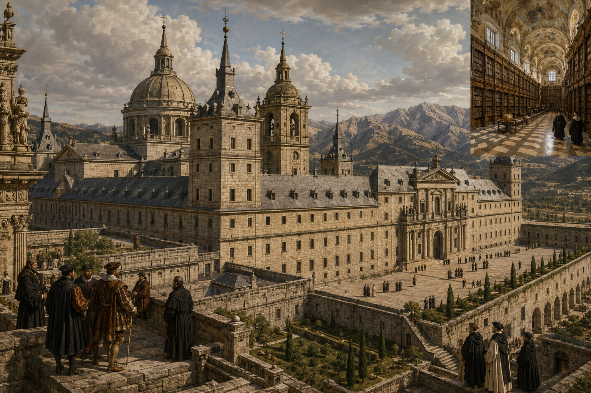原有纯 AI本轮图生图：等待生成修道院矩形院落布局、穹顶和森林环境清晰，主体匹配度较好。；仅500×333，细窗和装饰无法提供可靠细节约束。建议：先评估整体形态保留；高分辨率输出中的新增细节应视为AI补绘，定稿优先寻找大尺寸同角度照片。纯 AI · 27:11 居中裁剪示意图生图 · 27:11 居中裁剪示意：等待生成等待 AI 生成
05 奥斯曼朝觐道路 待核验参考源图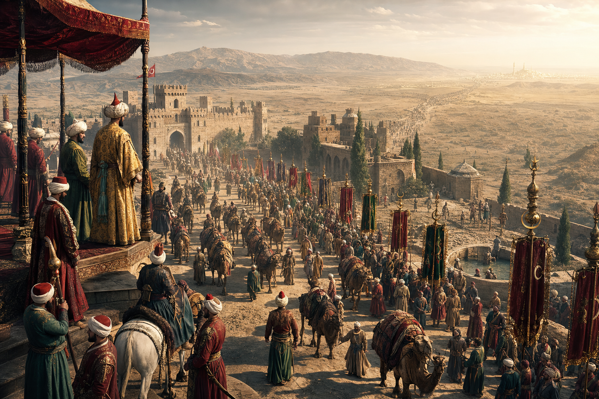原有纯 AI本轮图生图：等待生成画面主要是街市、行人与摊位，时代气氛较强，但没有清楚的朝觐路线标识。；仅474×263，人物和商品细节模糊，不能证明具体地点及身份。建议：核验该街景与朝觐道路的关系；若仅作气氛参考，应换用明确的驿站、商队或道路史料作为主体依据。纯 AI · 27:11 居中裁剪示意图生图 · 27:11 居中裁剪示意：等待生成等待 AI 生成
06 奥格斯堡银行 需换源参考源图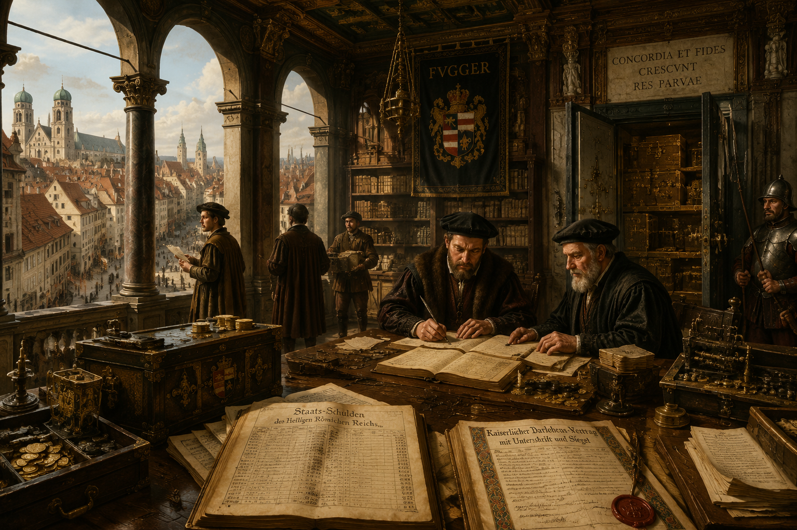原有纯 AI本轮图生图：等待生成拱顶大厅中的大型集会疑似议会或宫廷活动，未见明确银行账房特征。；人物密集，500×411的小图容易在强描边下糊成纹理。建议：先核对版画题材；拱顶可作时代气氛参考，银行主体优先采用可靠的金融建筑或账房图像。纯 AI · 27:11 居中裁剪示意图生图 · 27:11 居中裁剪示意：等待生成等待 AI 生成
07 巴士底狱 待核验参考源图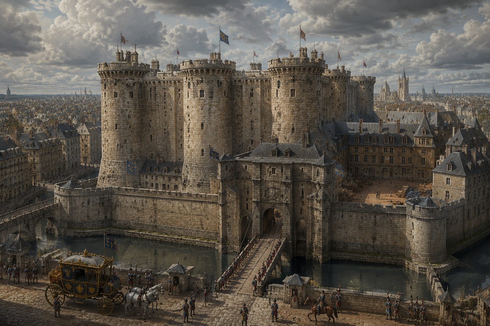原有纯 AI本轮图生图：等待生成高机位下的圆塔、城垣及城区有三维渲染特征。；不能将该图直接标为真实历史照片或历史画作；模型本身的考据准确性尚未核验。建议：核实图像来源及重建依据；若要求真实史料优先，应改用历史版画或明确标注依据的复原图。纯 AI · 27:11 居中裁剪示意图生图 · 27:11 居中裁剪示意：等待生成等待 AI 生成
08 巴库圣火庙 适合风格化参考源图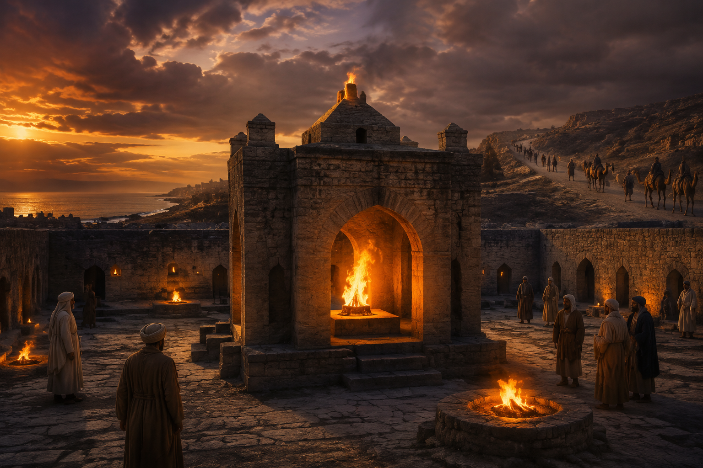原有纯 AI本轮图生图：等待生成中央火坛、四边石砌亭及围合院落明确，主体容易识别。；应保留火坛与亭体真实比例，避免新增神殿或夸大火焰。建议：保留建筑几何形态，降低天空的旅游照质感，关注石材重量和火光；年代及现状设施仍需核对。纯 AI · 27:11 居中裁剪示意图生图 · 27:11 居中裁剪示意：等待生成等待 AI 生成
09 巴黎圣母院 需清理参考源图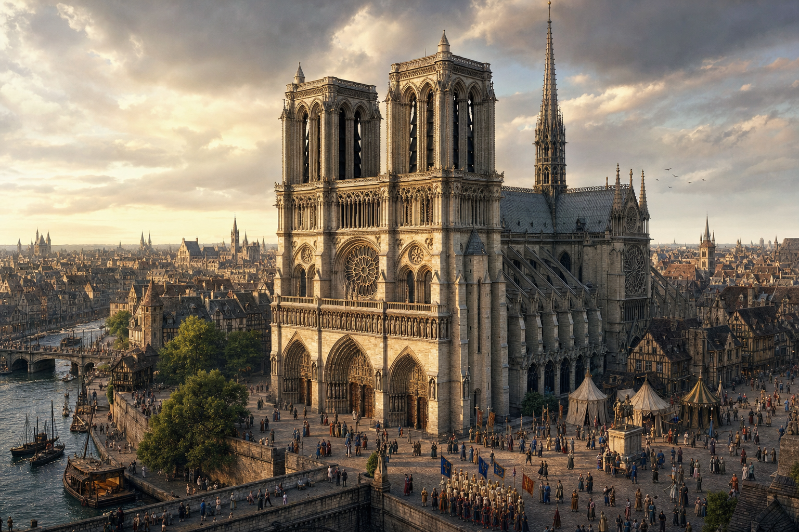原有纯 AI本轮图生图：等待生成双塔、玫瑰窗、飞扶壁和中部尖塔清楚，建筑结构约束强。；照片中的尖塔属于19世纪修复形态；用在更早年代时不能直接保留。；河岸环境及设施为现状。建议：按目标年份核对尖塔、屋顶和环境；避免通过风格化把后世修缮当成中世纪原貌。纯 AI · 27:11 居中裁剪示意图生图 · 27:11 居中裁剪示意：等待生成等待 AI 生成
10 布达拉宫 需清理参考源图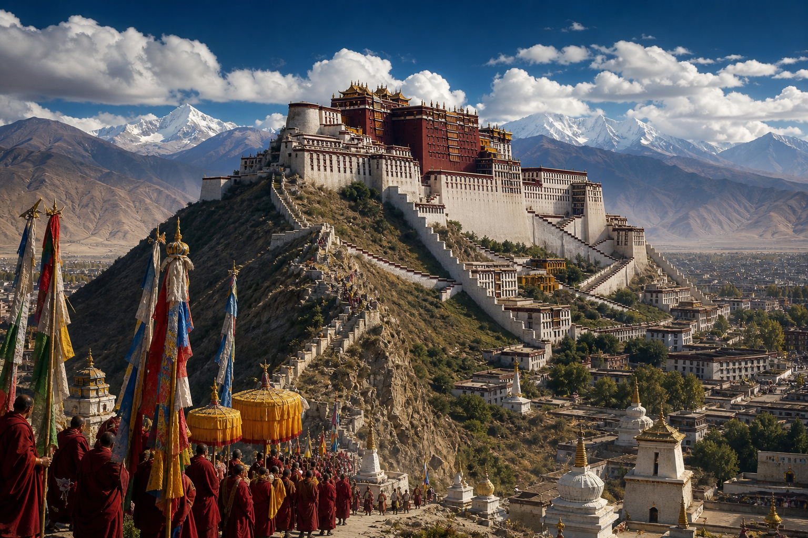原有纯 AI本轮图生图：等待生成红白宫体、山体和层叠墙面很清楚，识别度高。；前景现状路灯、招牌及其他现代设施需要逐项清理。；旧AI图有强烈的仪式和山景构图，但长阶梯及雪峰不受当前参考图支持。建议：保持真实红白宫体的分布及比例，清理现代设施；分别比较新图结构可靠性和旧图仪式氛围。纯 AI · 27:11 居中裁剪示意图生图 · 27:11 居中裁剪示意：等待生成等待 AI 生成
11 比萨斜塔 需清理参考源图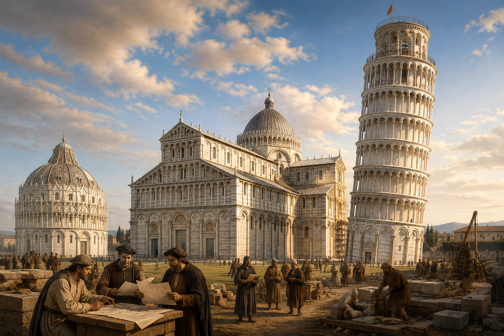原有纯 AI本轮图生图：等待生成塔身倾角、柱廊层数和白石材料可以直接约束模型。；脚手架、现代游客和服装明显。；960×1440竖图直接居中裁成27:11会严重截断塔顶或塔基。建议：清理游客和脚手架，锁定倾角和层数；定稿需要横幅重构或另找横向远景源图。纯 AI · 27:11 居中裁剪示意图生图 · 27:11 居中裁剪示意：等待生成等待 AI 生成
12 波尔多港 适合风格化参考源图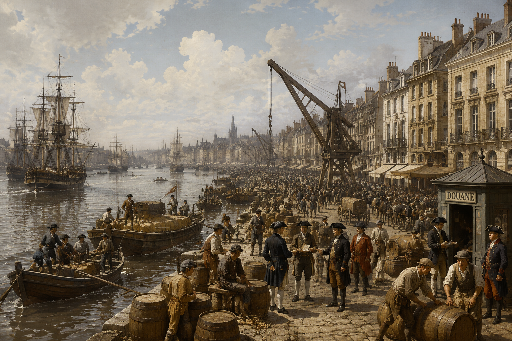原有纯 AI本轮图生图：等待生成帆船、划艇、码头及沿河建筑具有清楚的历史港口关系。；544×407，细线密集，上色和描边可能令船桅、索具及人物失真。建议：保留水道、船只和码头位置，采用克制的绘画上色；逐项核对帆索与船体，不要补成现代船。纯 AI · 27:11 居中裁剪示意图生图 · 27:11 居中裁剪示意：等待生成等待 AI 生成
13 贝伦塔 需清理参考源图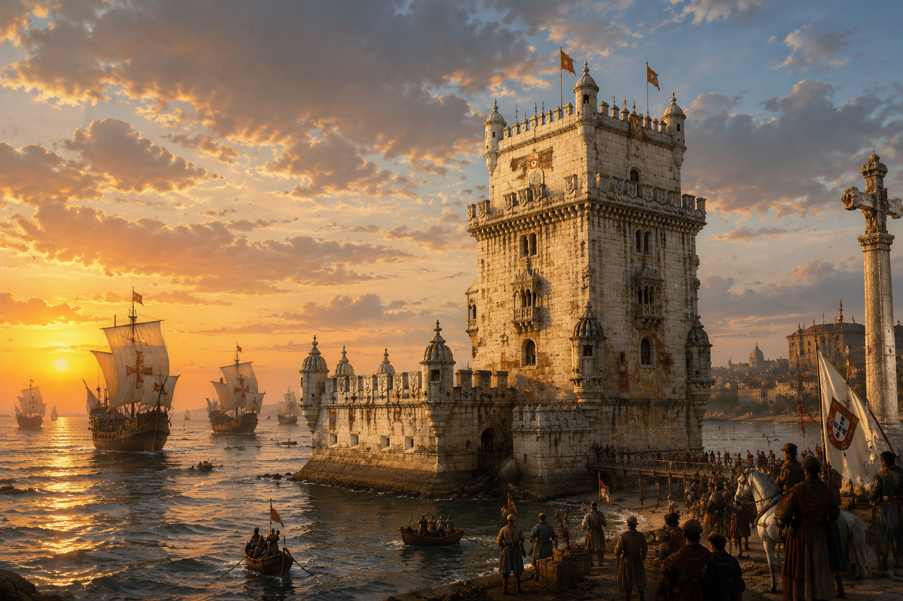原有纯 AI本轮图生图：等待生成曼努埃尔式塔体轮廓、低层堡垒和滨水位置明确。；仅500×332，逆光使塔身较暗；岸边有现代游客。；旧AI图具有强烈航海氛围，也加入了当前参考不支持的大型十字纪念柱。建议：适当提亮石材，清理现代岸边元素，约束塔顶形态；与旧图分别比较真实结构和航海氛围。纯 AI · 27:11 居中裁剪示意图生图 · 27:11 居中裁剪示意：等待生成等待 AI 生成
14 贝宁城墙 待核验参考源图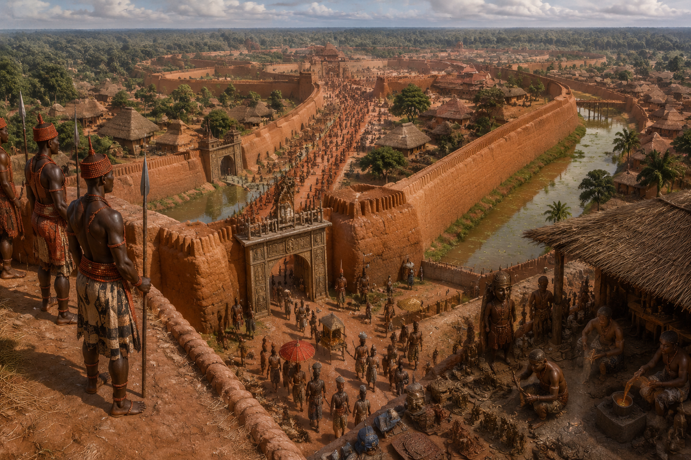原有纯 AI本轮图生图：等待生成302×284，图中城墙、道路、草屋和人物为重建式表现。；不能仅凭拟古风格确认其为历史画作，也不能从视觉观感确证是否AI生成。；具体城墙高度、材料及城市布局尚无已核实依据。建议：先核实出处和考据；若作为现代重建参考，需明确标注，不能视为实景史料。纯 AI · 27:11 居中裁剪示意图生图 · 27:11 居中裁剪示意：等待生成等待 AI 生成
15 贝尔格莱德要塞 适合风格化参考源图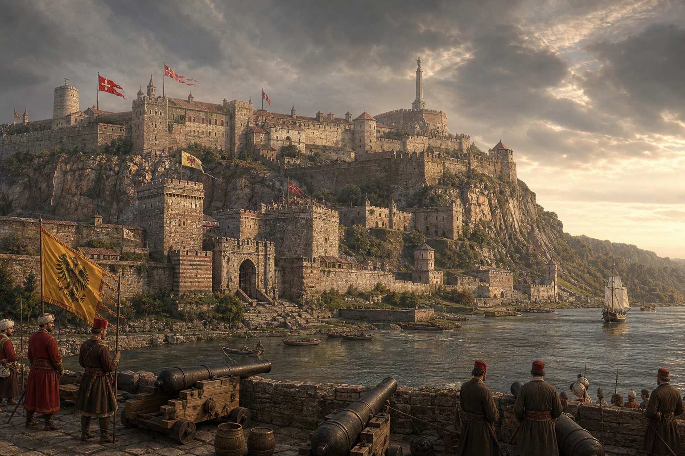原有纯 AI本轮图生图：等待生成圆塔、厚石墙、草坡及路径关系清楚，材料纹理易识别。；只是要塞局部，不能由单张图推断完整防御布局；现状修缮年代尚未核验。建议：先保留现有城墙、圆塔和地形比例，抑制旅游照片高饱和度；不应无依据增加大型城堡群。纯 AI · 27:11 居中裁剪示意图生图 · 27:11 居中裁剪示意：等待生成等待 AI 生成
16 贝希斯敦铭文 适合风格化参考源图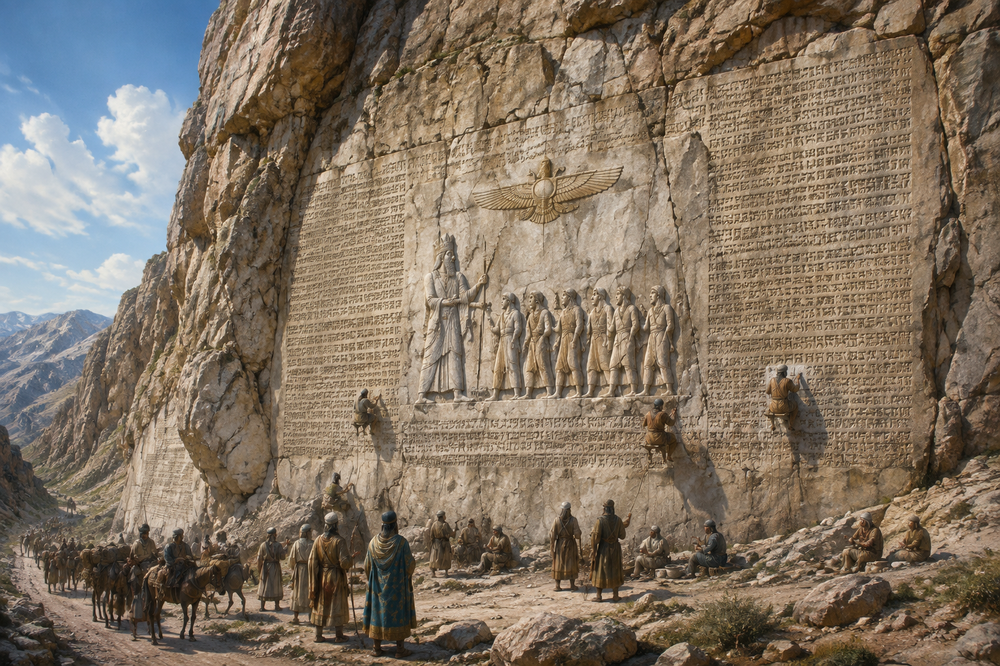原有纯 AI本轮图生图：等待生成真实岩壁、人物浮雕排列和铭文区域的位置可以直接约束生成。；石色相近导致缩略图识别较弱，文字细节不能从低清照片可靠复原。建议：保持人物和碑面位置、数量关系，增强局部明暗；不要把AI生成的纹样或文字当成铭文内容。纯 AI · 27:11 居中裁剪示意图生图 · 27:11 居中裁剪示意：等待生成等待 AI 生成
17 阿姆斯特丹运河圈 需清理参考源图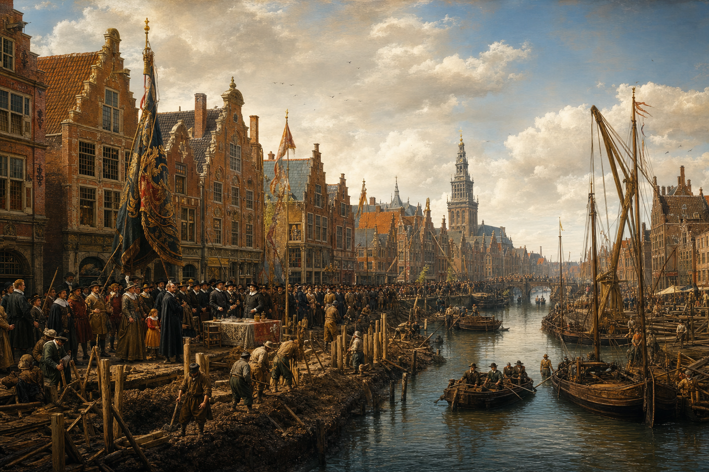原有纯 AI本轮图生图：等待生成密集坡顶建筑和运河可见，城市风貌有参考价值。；474×266，建筑与水道细节弱；局部道路和交通为现代现状。；画面未清楚展示完整运河圈，不能仅依靠该图约束全城布局。建议：选择更清楚的运河街景或历史鸟瞰图；若继续使用此图，需清理现代交通并避免臆造运河网络。纯 AI · 27:11 居中裁剪示意图生图 · 27:11 居中裁剪示意：等待生成等待 AI 生成
18 阿尔及尔海盗港 需换源参考源图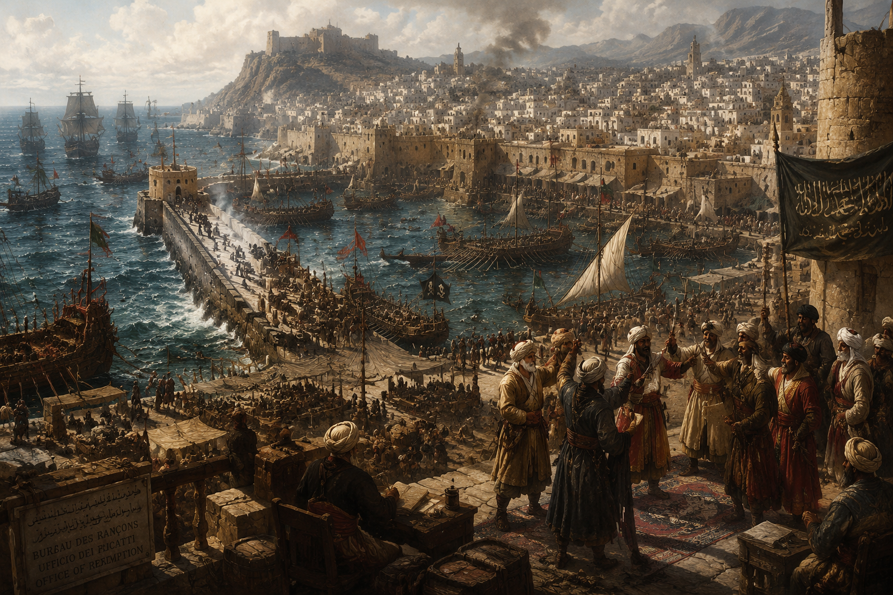原有纯 AI本轮图生图：等待生成画面含现代球场、沿海城房及机动船，旧港主体不明显。；天空和海水占比大，港口活动及海盗港识别线索不足。建议：更换为明确的历史港口、卡斯巴沿岸或可靠旧港画作；当前图最多作海岸地形辅助参考。纯 AI · 27:11 居中裁剪示意图生图 · 27:11 居中裁剪示意：等待生成等待 AI 生成
19 阿尔罕布拉宫 需清理参考源图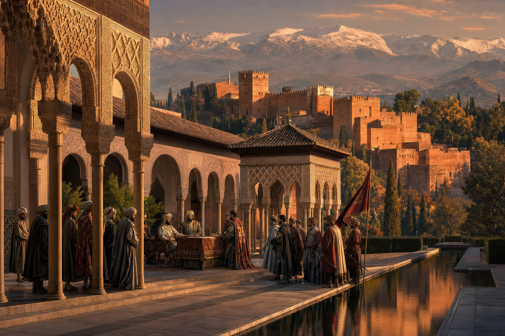原有纯 AI本轮图生图：等待生成红色宫墙、城塔、山坡和整体位置明确，主体可识别。；现代夜景照明明显；照片还包含后世建筑体量。；若目标为纳斯里时期，应核对16世纪查理五世宫殿等后世增建。建议：锁定目标年代，再处理后世建筑和电力照明；保留宫墙与山坡关系，避免通篇旅游夜景色调。纯 AI · 27:11 居中裁剪示意图生图 · 27:11 居中裁剪示意：等待生成等待 AI 生成
20 阿育陀耶外国使馆区 需换源参考源图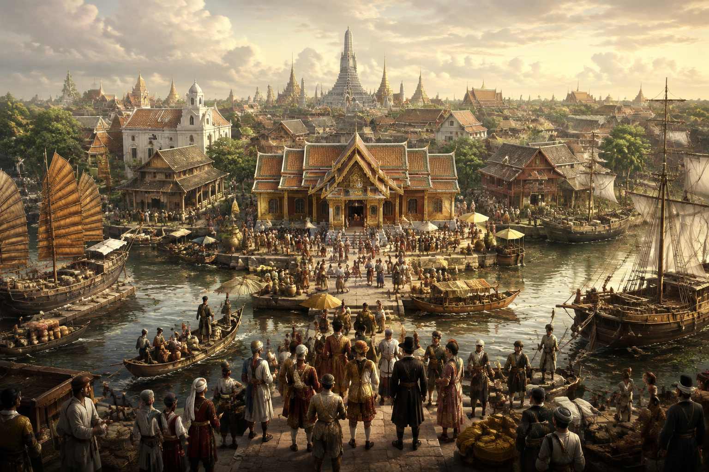原有纯 AI本轮图生图：等待生成画面主体是佛寺遗址高塔，外观近似 Wat Phra Si Sanphet，具体地点未核验。；没有明显外国使馆、河岸贸易或外交区特征。；保留现状废墟也不等于呈现当时正在使用的使馆区。建议：改用明确的外国聚落、使馆区或相关历史画作；不要将佛寺塔群直接当作外国使馆区。纯 AI · 27:11 居中裁剪示意图生图 · 27:11 居中裁剪示意：等待生成等待 AI 生成